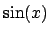

Next: 3.8 Datafile Interpolation: Spline Up: 3. Extensions of Gnuplot's Previous: 3.6.3 Steps Contents Index
In PyXPlot, as in gnuplot, user-defined functions may be declared on the commandline:
f(x) = x*sin(x)
As an extension to what is possible in gnuplot, it is also possible to declare functions which are only valid over a certain range of argument space. For example, the following function would only be valid in the range :3.7
f(x)[-2:2] = x*sin(x)
The following function would only be valid when all of were in the range :
f(a,b,c)[-1:1][-1:1][-1:1] = a+b+c
If an attempt is made to evaluate a function outside of its specified range,
then an error results. This may be useful, for example, for plotting a
function, but not continuing it outside some specified range. The following
would print the function , but only in the range  :
:
f(x)[-2:7] = sin(x) plot f(x)
The output of this particular example can be seen in panel (a) of figure 5.9. A similar effect could also have been achieved with the select keyword; see section 3.3.
It is possible to make multiple declarations of the same function, over different regions of argument space; if there is an overlap in the valid argument space for multiple definitions, then later declarations take precedence. This makes it possible to use different functional forms for a function in different parts of parameter space, and is especially useful when fitting a function to data, if different functional forms are to be spliced together to fit different regimes in the data.
Another application of function splicing is to work with functions which do not
have analytic forms, or which are, by definition, discontinuous, such as
top-hat functions or Heaviside functions. The following example would define
 to be a Heaviside function:
to be a Heaviside function:
f(x) = 0 f(x)[0:] = 1
The declaration of a function similar to a top-hat function is
demonstrated in panel (b) of figure 5.9. The following example would
define  to follow the Fibonacci sequence, though it is not at all
computationally efficient, and it is inadvisable to evaluate it for :
to follow the Fibonacci sequence, though it is not at all
computationally efficient, and it is inadvisable to evaluate it for :
f(x) = 1 f(x)[2:] = f(x-1) + f(x-2) plot [0:8] f(x)